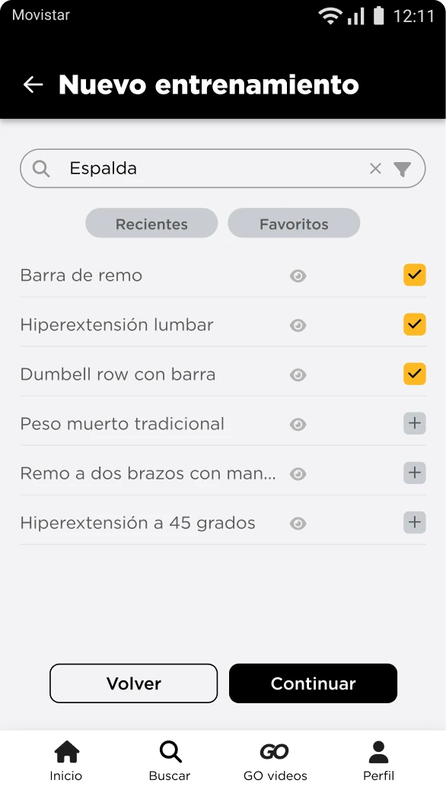
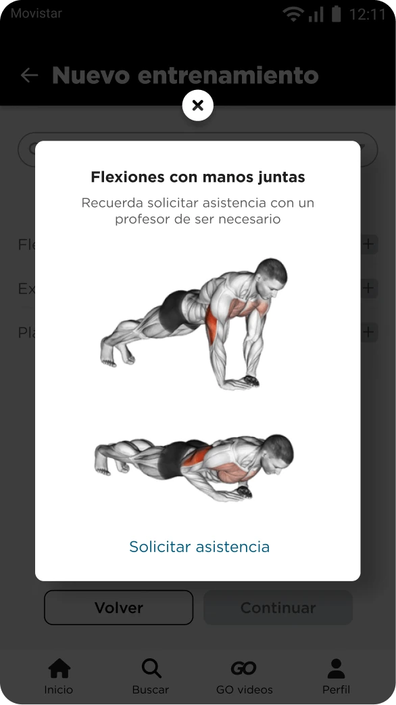
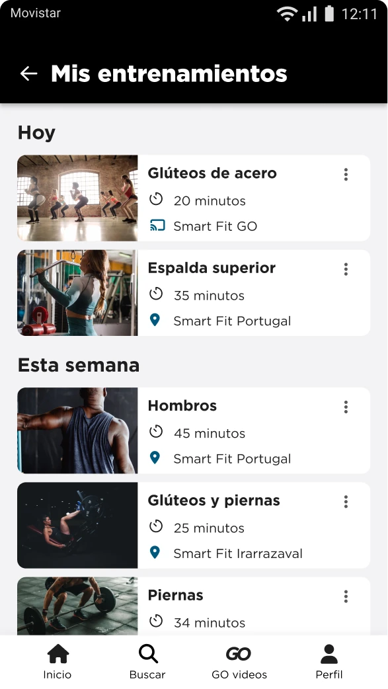
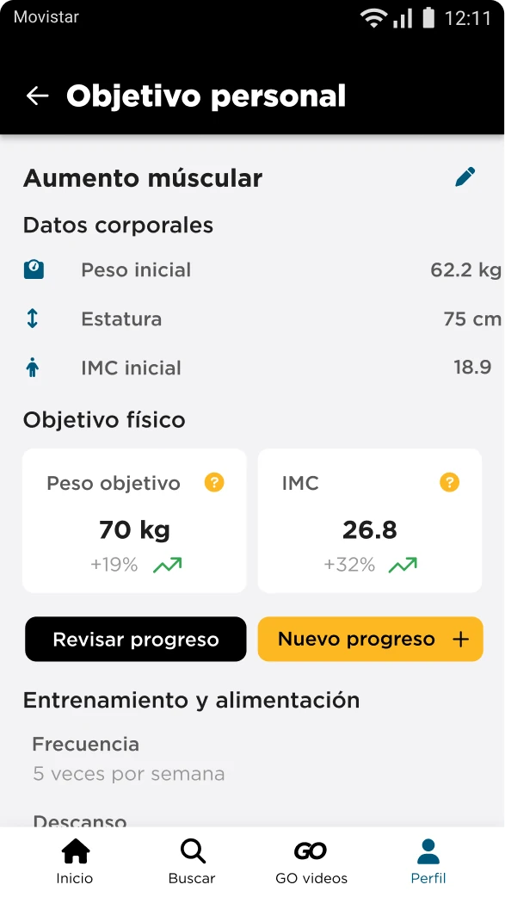
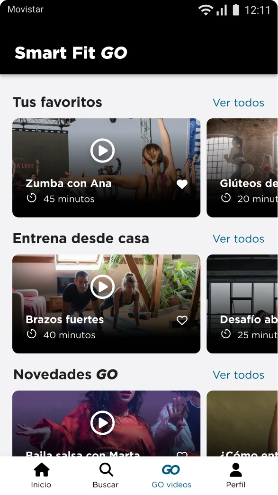

Smart, effortless training: less friction, more results.
SmartFit is a gym membership app used across Chile. We redesigned the experience end to end — from logging a workout to tracking a personal goal — to remove the friction that was keeping members from building a training habit.
How might we reduce friction in the SmartFit experience so members connect more easily with their training and wellbeing?
Understanding the problem
SmartFit's brief started as a simple UI refresh. Once we looked at the existing feedback and ran new interviews, it became clear the real issues were structural — not cosmetic. We interviewed 5 members across Chile in 30-minute sessions to understand where the app was getting in the way.
User needs vs. business reality
We wanted to fix everything at once. Instead, we mapped every idea against user value and implementation effort, which gave us an honest MVP to align on with the client before design started.
Prioritized for v1
- Search & filter exercises
- Create and manage a workout
- In-app help chat
- Exercise reference library
Parked for later
- Personalized recommendation engine
- Editable personal/body data
- Fingerprint login
- In-app community features
A follow-up card sorting session with returning and new users confirmed the structure below, which became the new information architecture.
From hypothesis to screens
With the research validated, we mapped user flows and task flows for the core journey — starting a new workout — then moved straight into low-fidelity wireframes: sign in, new workout, workout type, recommended routines, session details, and confirmation.
In parallel, content design got equal weight to layout. We used the Golden Circle to define why the product exists before writing a single button label: SmartFit's why is becoming a genuinely smart training partner — not just a booking app. That shaped a voice built on four pillars.
Those pillars fed a voice & tone matrix that standardized dates, button labels, and error and success messages — small, easy-to-miss details that add up to how trustworthy the app feels.
A consistent visual language
The final UI kit consolidated color, type, and components into a documented, auto-layout system the engineering team could implement directly.
SmartFit, reimagined
The redesign removed the biggest sources of friction: logging a workout, tracking a personal goal, and finding a session to follow — whether inside the gym or training from home with SmartFit GO.





What this project taught me
This redesign pushed me to look past the interface and into the systems behind it — how a login field, a search prompt, and an error message all carry the same product voice when they're designed with intent, not by default.
The biggest lesson was that the client's first framing of a problem isn't always the real one. Following the research instead of the brief led to a scope that actually solved the friction members were experiencing — which is a trade-off I'd make again.